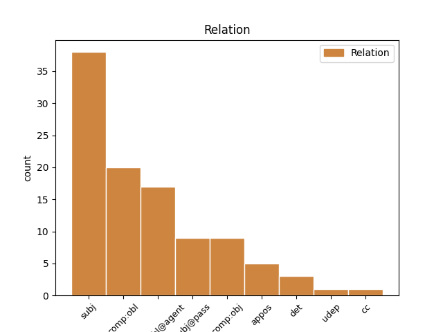
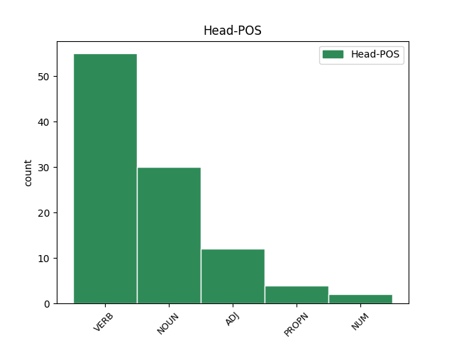
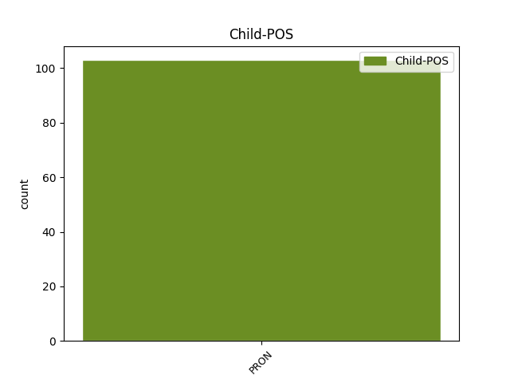

Distribution of features within this leaf



Agreement Rules sorted by frequency.
- When the dependent token is the subject(subj) of the head token, and the dependent token is PRON.
1 Это это PRON DT Animacy=Inan|Case=Nom|Gender=Neut|Number=Sing 3 subj _ _
2 классическое _ _ _ _ 0 _ _ _
3 иледование иледование NOUN NN Animacy=Inan|Case=Nom|Gender=Neut|Number=Sing 0 _ _ _
4 современных _ _ _ _ 0 _ _ _
5 демократических _ _ _ _ 0 _ _ _
6 государств _ _ _ _ 0 _ _ _
7 в _ _ _ _ 0 _ _ _
8 условиях _ _ _ _ 0 _ _ _
9 кризиса _ _ _ _ 0 _ _ _
10 . _ _ _ _ 0 _ _ _
1 Она она PRON PRP Case=Nom|Gender=Fem|Number=Sing|Person=3 2 subj@pass _ _
2 предана преданный ADJ JJH Case=Nom|Degree=Pos|Gender=Fem|Number=Sing|Variant=Short 0 _ _ _
3 своему _ _ _ _ 0 _ _ _
4 народу _ _ _ _ 0 _ _ _
5 , _ _ _ _ 0 _ _ _
6 и _ _ _ _ 0 _ _ _
7 готова _ _ _ _ 0 _ _ _
8 пожертвовать _ _ _ _ 0 _ _ _
9 собой _ _ _ _ 0 _ _ _
10 ради _ _ _ _ 0 _ _ _
11 клана _ _ _ _ 0 _ _ _
12 . _ _ _ _ 0 _ _ _
1 Она _ _ _ _ 0 _ _ _
2 не _ _ _ _ 0 _ _ _
3 знала _ _ _ _ 0 _ _ _
4 , _ _ _ _ 0 _ _ _
5 что _ _ _ _ 0 _ _ _
6 такое _ _ _ _ 0 _ _ _
7 наука _ _ _ _ 0 _ _ _
8 и _ _ _ _ 0 _ _ _
9 научное _ _ _ _ 0 _ _ _
10 образование _ _ _ _ 0 _ _ _
11 , _ _ _ _ 0 _ _ _
12 она _ _ _ _ 0 _ _ _
13 даже _ _ _ _ 0 _ _ _
14 совсем _ _ _ _ 0 _ _ _
15 не _ _ _ _ 0 _ _ _
16 имела _ _ _ _ 0 _ _ _
17 у _ _ _ _ 0 _ _ _
18 себя _ _ _ _ 0 _ _ _
19 школы _ _ _ _ 0 _ _ _
20 и _ _ _ _ 0 _ _ _
21 лиц _ _ _ _ 0 _ _ _
22 , _ _ _ _ 0 _ _ _
23 получивших _ _ _ _ 0 _ _ _
24 правильное _ _ _ _ 0 _ _ _
25 научное _ _ _ _ 0 _ _ _
26 образование _ _ _ _ 0 _ _ _
27 ; _ _ _ _ 0 _ _ _
28 весь _ _ _ _ 0 _ _ _
29 её _ _ _ _ 0 _ _ _
30 образовательный _ _ _ _ 0 _ _ _
31 капитал _ _ _ _ 0 _ _ _
32 заключался _ _ _ _ 0 _ _ _
33 в _ _ _ _ 0 _ _ _
34 том то PRON DT Animacy=Inan|Case=Loc|Gender=Neut|Number=Sing 46 det _ SpaceAfter=No
35 , _ _ _ _ 0 _ _ _
36 с _ _ _ _ 0 _ _ _
37 научной _ _ _ _ 0 _ _ _
38 точки _ _ _ _ 0 _ _ _
39 зрения _ _ _ _ 0 _ _ _
40 , _ _ _ _ 0 _ _ _
41 не _ _ _ _ 0 _ _ _
42 особенно _ _ _ _ 0 _ _ _
43 богатом _ _ _ _ 0 _ _ _
44 и _ _ _ _ 0 _ _ _
45 разнообразном _ _ _ _ 0 _ _ _
46 наследстве наследство NOUN NN Animacy=Inan|Case=Loc|Gender=Neut|Number=Sing 0 _ _ _
47 , _ _ _ _ 0 _ _ _
48 которое _ _ _ _ 0 _ _ _
49 в _ _ _ _ 0 _ _ _
50 разное _ _ _ _ 0 _ _ _
51 время _ _ _ _ 0 _ _ _
52 русские _ _ _ _ 0 _ _ _
53 посредственно _ _ _ _ 0 _ _ _
54 или _ _ _ _ 0 _ _ _
55 непосредственно _ _ _ _ 0 _ _ _
56 получали _ _ _ _ 0 _ _ _
57 от _ _ _ _ 0 _ _ _
58 греков _ _ _ _ 0 _ _ _
59 , _ _ _ _ 0 _ _ _
60 не _ _ _ _ 0 _ _ _
61 прибавив _ _ _ _ 0 _ _ _
62 к _ _ _ _ 0 _ _ _
63 нему _ _ _ _ 0 _ _ _
64 с _ _ _ _ 0 _ _ _
65 своей _ _ _ _ 0 _ _ _
66 стороны _ _ _ _ 0 _ _ _
67 почти _ _ _ _ 0 _ _ _
68 ровно _ _ _ _ 0 _ _ _
69 ничего _ _ _ _ 0 _ _ _
70 . _ _ _ _ 0 _ _ _
1 Зосима _ _ _ _ 0 _ _ _
2 впослествие _ _ _ _ 0 _ _ _
3 был _ _ _ _ 0 _ _ _
4 обвинён _ _ _ _ 0 _ _ _
5 в _ _ _ _ 0 _ _ _
6 том _ _ _ _ 0 _ _ _
7 , _ _ _ _ 0 _ _ _
8 что _ _ _ _ 0 _ _ _
9 потворствовал _ _ _ _ 0 _ _ _
10 жидовствующим жидовствующий NOUN NN Animacy=Anim|Case=Dat|Gender=Masc|Number=Plur 0 _ _ _
11 или _ _ _ _ 0 _ _ _
12 даже _ _ _ _ 0 _ _ _
13 тайно _ _ _ _ 0 _ _ _
14 придерживался _ _ _ _ 0 _ _ _
15 ереси _ _ _ _ 0 _ _ _
16 жидовствующих _ _ _ _ 0 _ _ _
17 , _ _ _ _ 0 _ _ _
18 им они PRON PRP Case=Dat|Number=Plur|Person=3 10 appos _ SpaceAfter=No
19 , _ _ _ _ 0 _ _ _
20 а _ _ _ _ 0 _ _ _
21 их _ _ _ _ 0 _ _ _
22 смелых _ _ _ _ 0 _ _ _
23 обличителей _ _ _ _ 0 _ _ _
24 наказывал _ _ _ _ 0 _ _ _
25 . _ _ _ _ 0 _ _ _
1 Создание _ _ _ _ 0 _ _ _
2 первичных _ _ _ _ 0 _ _ _
3 маркеров _ _ _ _ 0 _ _ _
4 и _ _ _ _ 0 _ _ _
5 их _ _ _ _ 0 _ _ _
6 ассоциация _ _ _ _ 0 _ _ _
7 с _ _ _ _ 0 _ _ _
8 процессом _ _ _ _ 0 _ _ _
9 являются _ _ _ _ 0 _ _ _
10 привилегированными _ _ _ _ 0 _ _ _
11 операциями _ _ _ _ 0 _ _ _
12 , _ _ _ _ 0 _ _ _
13 нуждающимися _ _ _ _ 0 _ _ _
14 в _ _ _ _ 0 _ _ _
15 двух _ _ _ _ 0 _ _ _
16 различных _ _ _ _ 0 _ _ _
17 привилегиях _ _ _ _ 0 _ _ _
18 ( _ _ _ _ 0 _ _ _
19 для _ _ _ _ 0 _ _ _
20 разделения _ _ _ _ 0 _ _ _
21 привилегий _ _ _ _ 0 _ _ _
22 ) _ _ _ _ 0 _ _ _
23 -- _ _ _ _ 0 _ _ _
24 типичный _ _ _ _ 0 _ _ _
25 сценарий _ _ _ _ 0 _ _ _
26 видит _ _ _ _ 0 _ _ _
27 создающий _ _ _ _ 0 _ _ _
28 маркер _ _ _ _ 0 _ _ _
29 доступа _ _ _ _ 0 _ _ _
30 сервис _ _ _ _ 0 _ _ _
31 идентификации _ _ _ _ 0 _ _ _
32 и _ _ _ _ 0 _ _ _
33 сервис _ _ _ _ 0 _ _ _
34 входа _ _ _ _ 0 _ _ _
35 в _ _ _ _ 0 _ _ _
36 систему _ _ _ _ 0 _ _ _
37 , _ _ _ _ 0 _ _ _
38 ассоциирующий ассоциировать VERB VBNL Animacy=Inan|Aspect=Imp|Case=Acc|Gender=Masc|Number=Sing|Tense=Pres|VerbForm=Part|Voice=Act 0 _ _ _
39 его он PRON PRP Case=Acc|Gender=Masc|Number=Sing|Person=3 38 comp:obj _ _
40 с _ _ _ _ 0 _ _ _
41 оболочкой _ _ _ _ 0 _ _ _
42 операционной _ _ _ _ 0 _ _ _
43 системы _ _ _ _ 0 _ _ _
44 . _ _ _ _ 0 _ _ _
1 Идеями _ _ _ _ 0 _ _ _
2 противопоставления _ _ _ _ 0 _ _ _
3 света _ _ _ _ 0 _ _ _
4 и _ _ _ _ 0 _ _ _
5 тьмы _ _ _ _ 0 _ _ _
6 изобилуют _ _ _ _ 0 _ _ _
7 многие _ _ _ _ 0 _ _ _
8 оккультные _ _ _ _ 0 _ _ _
9 магические _ _ _ _ 0 _ _ _
10 символы _ _ _ _ 0 _ _ _
11 , _ _ _ _ 0 _ _ _
12 но _ _ _ _ 0 _ _ _
13 суть _ _ _ _ 0 _ _ _
14 у _ _ _ _ 0 _ _ _
15 них _ _ _ _ 0 _ _ _
16 всё _ _ _ _ 0 _ _ _
17 время _ _ _ _ 0 _ _ _
18 одна _ _ _ _ 0 _ _ _
19 : _ _ _ _ 0 _ _ _
20 свет _ _ _ _ 0 _ _ _
21 ( _ _ _ _ 0 _ _ _
22 ян _ _ _ _ 0 _ _ _
23 ) _ _ _ _ 0 _ _ _
24 и _ _ _ _ 0 _ _ _
25 тьма _ _ _ _ 0 _ _ _
26 ( _ _ _ _ 0 _ _ _
27 инь _ _ _ _ 0 _ _ _
28 ) _ _ _ _ 0 _ _ _
29 вечно _ _ _ _ 0 _ _ _
30 возвращаются _ _ _ _ 0 _ _ _
31 , _ _ _ _ 0 _ _ _
32 следуя _ _ _ _ 0 _ _ _
33 друг _ _ _ _ 0 _ _ _
34 за _ _ _ _ 0 _ _ _
35 другом _ _ _ _ 0 _ _ _
36 , _ _ _ _ 0 _ _ _
37 и _ _ _ _ 0 _ _ _
38 порождают _ _ _ _ 0 _ _ _
39 то _ _ _ _ 0 _ _ _
40 , _ _ _ _ 0 _ _ _
41 что _ _ _ _ 0 _ _ _
42 китайцы _ _ _ _ 0 _ _ _
43 называют _ _ _ _ 0 _ _ _
44 `` _ _ _ _ 0 _ _ _
45 Десятью _ _ _ _ 0 _ _ _
46 тысячами _ _ _ _ 0 _ _ _
47 вещей _ _ _ _ 0 _ _ _
48 '' _ _ _ _ 0 _ _ _
49 , _ _ _ _ 0 _ _ _
50 то то PRON DT Animacy=Inan|Case=Nom|Gender=Neut|Number=Sing 52 cc _ _
51 есть _ _ _ _ 0 _ _ _
52 мир мир NOUN NN Animacy=Inan|Case=Nom|Gender=Masc|Number=Sing 0 _ _ _
53 сотворённый _ _ _ _ 0 _ _ _
54 . _ _ _ _ 0 _ _ _
1 В _ _ _ _ 0 _ _ _
2 1991 _ _ _ _ 0 _ _ _
3 -- _ _ _ _ 0 _ _ _
4 1994 _ _ _ _ 0 _ _ _
5 также _ _ _ _ 0 _ _ _
6 руководил _ _ _ _ 0 _ _ _
7 основанной основать VERB VBNL Animacy=Inan|Aspect=Perf|Case=Ins|Gender=Fem|Number=Sing|Tense=Past|VerbForm=Part|Voice=Pass 0 _ _ _
8 им он PRON PRP Case=Ins|Gender=Masc|Number=Sing|Person=3 7 comp:obl@agent _ _
9 труппой _ _ _ _ 0 _ _ _
10 `` _ _ _ _ 0 _ _ _
11 Большой _ _ _ _ 0 _ _ _
12 театр _ _ _ _ 0 _ _ _
13 -- _ _ _ _ 0 _ _ _
14 студия _ _ _ _ 0 _ _ _
15 Юрия _ _ _ _ 0 _ _ _
16 Григоровича _ _ _ _ 0 _ _ _
17 '' _ _ _ _ 0 _ _ _
18 . _ _ _ _ 0 _ _ _
1 А _ _ _ _ 0 _ _ _
2 15 _ _ _ _ 0 _ _ _
3 февраля _ _ _ _ 0 _ _ _
4 2005 _ _ _ _ 0 _ _ _
5 года _ _ _ _ 0 _ _ _
6 Вишняковские _ _ _ _ 0 _ _ _
7 Дачи _ _ _ _ 0 _ _ _
8 были _ _ _ _ 0 _ _ _
9 включены _ _ _ _ 0 _ _ _
10 в _ _ _ _ 0 _ _ _
11 состав _ _ _ _ 0 _ _ _
12 города _ _ _ _ 0 _ _ _
13 Электроугли _ _ _ _ 0 _ _ _
14 , _ _ _ _ 0 _ _ _
15 тем то PRON DT Animacy=Inan|Case=Ins|Gender=Neut|Number=Sing 18 udep _ _
16 самым _ _ _ _ 0 _ _ _
17 став _ _ _ _ 0 _ _ _
18 микрорайоном микрорайон NOUN NN Animacy=Inan|Case=Ins|Gender=Masc|Number=Sing 0 _ _ _
19 . _ _ _ _ 0 _ _ _
Disagree Examples:
1 Преемственность _ _ _ _ 0 _ _ _
2 выводится _ _ _ _ 0 _ _ _
3 как _ _ _ _ 0 _ _ _
4 умозаключения _ _ _ _ 0 _ _ _
5 авторов _ _ _ _ 0 _ _ _
6 , _ _ _ _ 0 _ _ _
7 в _ _ _ _ 0 _ _ _
8 рамках _ _ _ _ 0 _ _ _
9 средневековой _ _ _ _ 0 _ _ _
10 традиции _ _ _ _ 0 _ _ _
11 вольно _ _ _ _ 0 _ _ _
12 развивающих _ _ _ _ 0 _ _ _
13 доступные доступный ADJ JJL Animacy=Inan|Case=Acc|Degree=Pos|Number=Plur 0 _ _ _
14 им они PRON PRP Case=Dat|Number=Plur|Person=3 13 comp:obl _ _
15 источники _ _ _ _ 0 _ _ _
16 . _ _ _ _ 0 _ _ _
1 Палата _ _ _ _ 0 _ _ _
2 лордов _ _ _ _ 0 _ _ _
3 вынесла _ _ _ _ 0 _ _ _
4 окончательный _ _ _ _ 0 _ _ _
5 вердикт _ _ _ _ 0 _ _ _
6 , _ _ _ _ 0 _ _ _
7 согласно _ _ _ _ 0 _ _ _
8 которому _ _ _ _ 0 _ _ _
9 Пиночет _ _ _ _ 0 _ _ _
10 не _ _ _ _ 0 _ _ _
11 должен _ _ _ _ 0 _ _ _
12 был _ _ _ _ 0 _ _ _
13 нести _ _ _ _ 0 _ _ _
14 ответственности _ _ _ _ 0 _ _ _
15 за _ _ _ _ 0 _ _ _
16 преступления _ _ _ _ 0 _ _ _
17 , _ _ _ _ 0 _ _ _
18 совершенные совершить VERB VBNL Animacy=Inan|Aspect=Perf|Case=Acc|Number=Plur|Tense=Past|VerbForm=Part|Voice=Pass 0 _ _ _
19 им он PRON PRP Case=Ins|Gender=Masc|Number=Sing|Person=3 18 comp:obl@agent _ _
20 до _ _ _ _ 0 _ _ _
21 1988 _ _ _ _ 0 _ _ _
22 г. _ _ _ _ 0 _ _ _
23 , _ _ _ _ 0 _ _ _
24 но _ _ _ _ 0 _ _ _
25 лишался _ _ _ _ 0 _ _ _
26 иммунитета _ _ _ _ 0 _ _ _
27 от _ _ _ _ 0 _ _ _
28 преследований _ _ _ _ 0 _ _ _
29 за _ _ _ _ 0 _ _ _
30 преступления _ _ _ _ 0 _ _ _
31 , _ _ _ _ 0 _ _ _
32 совершенные _ _ _ _ 0 _ _ _
33 позже _ _ _ _ 0 _ _ _
34 . _ _ _ _ 0 _ _ _
1 В _ _ _ _ 0 _ _ _
2 случае _ _ _ _ 0 _ _ _
3 со _ _ _ _ 0 _ _ _
4 встроенным _ _ _ _ 0 _ _ _
5 шкафом _ _ _ _ 0 _ _ _
6 с _ _ _ _ 0 _ _ _
7 обычными _ _ _ _ 0 _ _ _
8 дверками _ _ _ _ 0 _ _ _
9 этого _ _ _ _ 0 _ _ _
10 преимущества _ _ _ _ 0 _ _ _
11 нет _ _ _ _ 0 _ _ _
12 так _ _ _ _ 0 _ _ _
13 как _ _ _ _ 0 _ _ _
14 там _ _ _ _ 0 _ _ _
15 отсутствует _ _ _ _ 0 _ _ _
16 необходимость _ _ _ _ 0 _ _ _
17 задействовать _ _ _ _ 0 _ _ _
18 часть _ _ _ _ 0 _ _ _
19 внутреннего _ _ _ _ 0 _ _ _
20 пространства _ _ _ _ 0 _ _ _
21 под _ _ _ _ 0 _ _ _
22 систему _ _ _ _ 0 _ _ _
23 раздвижных _ _ _ _ 0 _ _ _
24 дверей _ _ _ _ 0 _ _ _
25 , _ _ _ _ 0 _ _ _
26 а _ _ _ _ 0 _ _ _
27 это это PRON DT Animacy=Inan|Case=Nom|Gender=Neut|Number=Sing 29 subj _ _
28 5-7 _ _ _ _ 0 _ _ _
29 см см NOUN NN Animacy=Inan|Case=Gen|Gender=Masc|Number=Plur 0 _ _ _
30 . _ _ _ _ 0 _ _ _
1 Элайнер _ _ _ _ 0 _ _ _
2 ( _ _ _ _ 0 _ _ _
3 элайнеры _ _ _ _ 0 _ _ _
4 ) _ _ _ _ 0 _ _ _
5 , _ _ _ _ 0 _ _ _
6 стоматологическая _ _ _ _ 0 _ _ _
7 каппа _ _ _ _ 0 _ _ _
8 для _ _ _ _ 0 _ _ _
9 коррекции _ _ _ _ 0 _ _ _
10 положения _ _ _ _ 0 _ _ _
11 зубов. _ _ _ _ 0 _ _ _
12 -- _ _ _ _ 0 _ _ _
13 это _ _ _ _ 0 _ _ _
14 съёмный _ _ _ _ 0 _ _ _
15 ортодонтический _ _ _ _ 0 _ _ _
16 аппарат _ _ _ _ 0 _ _ _
17 , _ _ _ _ 0 _ _ _
18 представляющий представлять VERB VBNL Animacy=Inan|Aspect=Imp|Case=Nom|Gender=Masc|Number=Sing|Tense=Pres|VerbForm=Part|Voice=Act 0 _ _ _
19 собой себя PRON PRP Case=Ins|Reflex=Yes 18 comp:obl _ _
20 специальные _ _ _ _ 0 _ _ _
21 накладки _ _ _ _ 0 _ _ _
22 на _ _ _ _ 0 _ _ _
23 зубы _ _ _ _ 0 _ _ _
24 из _ _ _ _ 0 _ _ _
25 поликарбоната _ _ _ _ 0 _ _ _
26 . _ _ _ _ 0 _ _ _
1 Древнегреческий _ _ _ _ 0 _ _ _
2 учёный _ _ _ _ 0 _ _ _
3 Архимед _ _ _ _ 0 _ _ _
4 сформулировал _ _ _ _ 0 _ _ _
5 закон _ _ _ _ 0 _ _ _
6 , _ _ _ _ 0 _ _ _
7 по _ _ _ _ 0 _ _ _
8 которому _ _ _ _ 0 _ _ _
9 погружённое _ _ _ _ 0 _ _ _
10 тело _ _ _ _ 0 _ _ _
11 плавает _ _ _ _ 0 _ _ _
12 в _ _ _ _ 0 _ _ _
13 равновесии _ _ _ _ 0 _ _ _
14 , _ _ _ _ 0 _ _ _
15 когда _ _ _ _ 0 _ _ _
16 его _ _ _ _ 0 _ _ _
17 вес _ _ _ _ 0 _ _ _
18 равен _ _ _ _ 0 _ _ _
19 весу _ _ _ _ 0 _ _ _
20 вытесненного вытеснить VERB VBNL Animacy=Inan|Aspect=Perf|Case=Gen|Gender=Masc|Number=Sing|Tense=Past|VerbForm=Part|Voice=Pass 0 _ _ _
21 им оно PRON PRP Case=Ins|Gender=Neut|Number=Sing|Person=3 20 comp:obl@agent _ _
22 объёма _ _ _ _ 0 _ _ _
23 жидкости _ _ _ _ 0 _ _ _
24 . _ _ _ _ 0 _ _ _